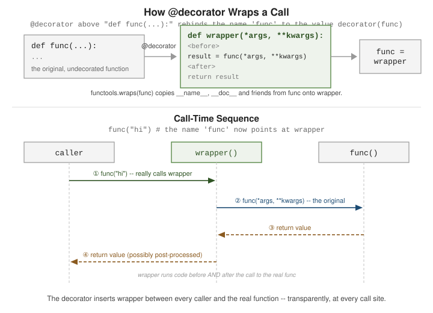

Decorators and Metaclasses
|
This content was generated with the assistance of AI and should be verified against the official documentation before being relied on in production. |
A decorator is a callable that wraps another callable and returns a replacement for it — most of what looks like special syntax below is sugar for that one idea. Metaclasses are a separate, much rarer tool for controlling how classes themselves are built.
Function Decorators
What a decorator is: @decorator syntax
\@decorator above a def is shorthand for calling decorator on the function and rebinding the name
to its result. The glossary defines the term precisely under
decorator:
def decorator(func):
def wrapper(*args, **kwargs):
print(f"calling {func.__name__}")
result = func(*args, **kwargs)
print(f"{func.__name__} returned {result!r}")
return result
return wrapper
@decorator
def add(a, b):
return a + b
# equivalent, written out by hand:
# add = decorator(add)
print(add(2, 3))
# calling add
# add returned 5
# 5
Preserving metadata with functools.wraps
After decoration, add.__name__ and add.__doc__ belong to wrapper, not to the original function — confusing for introspection, help(), and tools that read those attributes. Decorating wrapper itself
with functools.wraps(func) copies them back. See
functools.wraps:
import functools
def logged(func):
@functools.wraps(func)
def wrapper(*args, **kwargs):
return func(*args, **kwargs)
return wrapper
@logged
def add(a, b):
"""Return the sum of a and b."""
return a + b
print(add.__name__) # add (without @wraps this would be 'wrapper')
print(add.__doc__) # Return the sum of a and b.Decorator Factories, Stacking, and Class Decorators
Decorators with arguments: a decorator factory
A decorator that itself takes arguments is a function returning a decorator — three levels deep: the factory, the decorator it returns, and the wrapper that decorator returns:
import functools
def repeat(times):
def decorator(func):
@functools.wraps(func)
def wrapper(*args, **kwargs):
result = None
for _ in range(times):
result = func(*args, **kwargs)
return result
return wrapper
return decorator
@repeat(times=3)
def say_hi():
print("hi")
say_hi()
# hi
# hi
# hiStacking multiple decorators
Decorators stack bottom-up: the one closest to def wraps the function first, and each one above wraps
the result of the one below it. @a then @b above def f is f = a(b(f)):
def shout(func):
@functools.wraps(func)
def wrapper(*args, **kwargs):
return func(*args, **kwargs).upper()
return wrapper
def exclaim(func):
@functools.wraps(func)
def wrapper(*args, **kwargs):
return func(*args, **kwargs) + "!"
return wrapper
@shout
@exclaim
def greet(name):
return f"hello, {name}"
print(greet("Ada")) # HELLO, ADA!
# order: exclaim runs first (adds "!"), then shout uppercases the whole resultClass decorators
A decorator can also wrap a class: it receives the class object and returns a class (often the same one, mutated, or a subclass). This is frequently the simpler alternative to a metaclass, covered next:
def add_repr(cls):
def __repr__(self):
return f"{cls.__name__}({self.__dict__})"
cls.__repr__ = __repr__
return cls
@add_repr
class Point:
def __init__(self, x, y):
self.x = x
self.y = y
print(Point(1, 2)) # Point({'x': 1, 'y': 2})Metaclasses
A class statement does not just define a template for instances — it also creates a class object,
and that creation is itself governed by a class: the class object’s own type, its metaclass. By
default that metaclass is the built-in type. This is documented, in depth, under
Customizing class creation:
class Point:
pass
print(type(Point)) # <class 'type'>
print(isinstance(Point, type)) # TrueA custom metaclass subclasses type and overrides how classes are built, typically in __new__ or
__init__; a class opts into it with the metaclass= keyword:
class Meta(type):
def __new__(mcs, name, bases, namespace):
namespace.setdefault("created_by", "Meta")
return super().__new__(mcs, name, bases, namespace)
class Widget(metaclass=Meta):
pass
print(Widget.created_by) # Meta| You rarely need this. Metaclasses affect every subclass and interact poorly with other metaclasses, multiple inheritance, and most readers' intuitions. A class decorator (above) runs at the same point — right after the class body executes — with a plain function instead of a second class hierarchy, and covers the overwhelming majority of "customize class creation" use cases. Reach for a metaclass only when you must intercept inheritance itself (e.g. auto-registering every subclass), not merely to post-process one class. |
How Decoration and Class Creation Work
A decorator is a rebinding
@decorator above a def is exactly name = decorator(name) executed once, right after the function object is created.
The decorator receives the original function and returns something callable, usually a wrapper closure that
adds behaviour before and after calling the original. Stacked decorators apply from the bottom up (the one nearest the
def first) and, at call time, run from the top down, like layers of wrapping paper.
functools.wraps copies __name__, __doc__, __module__ and __annotations__ onto the wrapper and sets
__wrapped__, so tracebacks, help text and introspection (inspect.signature follows __wrapped__) stay meaningful.
A decorator factory adds one more level: @retry(3) first calls retry(3), which returns the real decorator. Always
forward *args and **kwargs and return the wrapped function’s result, or the decorator breaks callers silently.
import functools
import time
def log_calls(func):
@functools.wraps(func) # copy __name__, __doc__, __wrapped__ ...
def wrapper(*args, **kwargs):
print(f"-> {func.__name__}{args}")
result = func(*args, **kwargs)
print(f"<- {func.__name__} returned {result!r}")
return result
return wrapper
def retry(times, exceptions=(Exception,)):
"""A decorator factory: retry(3) returns the real decorator."""
def decorator(func):
@functools.wraps(func)
def wrapper(*args, **kwargs):
for attempt in range(1, times + 1):
try:
return func(*args, **kwargs)
except exceptions as exc:
print(f"attempt {attempt} failed: {exc}")
if attempt == times:
raise
return wrapper
return decorator
calls = {"n": 0}
@log_calls
@retry(3, exceptions=(ConnectionError,))
def fetch_title(isbn):
"""Look up a title, flaky on the first two calls."""
calls["n"] += 1
if calls["n"] < 3:
raise ConnectionError("timeout")
return "Dune"
print(fetch_title("978-0441172719"))
print(fetch_title.__name__, fetch_title.__doc__)
print(fetch_title.__wrapped__.__name__) # the retry wrapper; wraps chains the originals
# the decorator syntax is only sugar for rebinding: fetch_title = log_calls(retry(3, ...)(fetch_title))Output:
-> fetch_title('978-0441172719',)
attempt 1 failed: timeout
attempt 2 failed: timeout
<- fetch_title returned 'Dune'
Dune
fetch_title Look up a title, flaky on the first two calls.
fetch_titleClass decorators, decorator classes, and methods
A decorator can also receive a class (a registration or validation hook that runs once, when the class is defined) and a
decorator can itself be a class whose __call__ makes its instances callable. A class-based decorator that wraps
methods must also implement __get__, otherwise the instance is not passed as self: an object of that class is not a
function, so it does not bind automatically. Plain function decorators bind correctly because functions are descriptors
(see Managed Attributes). State such as a call counter can live in the wrapper’s closure, in a
function attribute or in the decorator object, but remember that it is shared by all callers and all threads.
import functools
from functools import wraps
def register(registry):
def decorator(cls):
registry[cls.__name__.lower()] = cls # class decorator: runs once, at class creation
return cls
return decorator
FORMATS = {}
@register(FORMATS)
class Json:
pass
@register(FORMATS)
class Csv:
pass
print(sorted(FORMATS))
class CountCalls:
"""A class used as a decorator: __call__ makes instances behave like functions."""
def __init__(self, func):
functools.update_wrapper(self, func)
self.func, self.count = func, 0
def __call__(self, *args, **kwargs):
self.count += 1
return self.func(*args, **kwargs)
def __get__(self, obj, objtype=None): # needed so it binds like a method when used on one
return functools.partial(self.__call__, obj) if obj is not None else self
@CountCalls
def greet(name):
return f"hello {name}"
greet("a"); greet("b")
print(greet.count, greet.__name__)
class Shelf:
@CountCalls
def add(self, title):
return title
s = Shelf()
s.add("Dune"); s.add("Emma")
print(Shelf.add.count)
def timed(func):
@wraps(func)
def wrapper(*a, **kw):
wrapper.calls += 1
return func(*a, **kw)
wrapper.calls = 0 # a function attribute as simple state
return wrapper
@timed
def f(): pass
f(); f()
print(f.calls)Output:
['csv', 'json']
2 greet
2
2The standard library is a good catalogue of decorators worth recognising: functools.lru_cache and cache,
functools.singledispatch, contextlib.contextmanager, dataclasses.dataclass, property, classmethod, staticmethod
and atexit.register.
Classes are created by metaclasses
Because a class is an object, something must create it: its metaclass, which defaults to type. The statement
class C(Base): body runs the body into a namespace dictionary, picks the metaclass (the most derived one among the bases'
metaclasses, or the metaclass= keyword), and calls Meta(name, bases, namespace). type is its own metaclass, so
type(type) is type.
# 1. type(name, bases, namespace) is what a class statement calls
Point = type("Point", (), {"x": 0, "describe": lambda self: f"Point at {self.x}"})
print(Point().describe(), type(Point), type(type))
# 2. a metaclass customises class creation
class RegistryMeta(type):
registry = {}
def __new__(mcls, name, bases, namespace):
cls = super().__new__(mcls, name, bases, namespace)
if bases: # skip the abstract base itself
mcls.registry[name] = cls
print(f"creating class {name}")
return cls
def __call__(cls, *args, **kwargs): # customises instance creation
print(f"instantiating {cls.__name__}")
return super().__call__(*args, **kwargs)
class Plugin(metaclass=RegistryMeta):
pass
class Exporter(Plugin):
pass
class Importer(Plugin):
pass
Exporter()
print(sorted(RegistryMeta.registry), type(Exporter).__name__)
# 3. __init_subclass__ does the same job for most registries, with no metaclass
class Handler:
handlers = {}
def __init_subclass__(cls, kind=None, **kwargs):
super().__init_subclass__(**kwargs)
Handler.handlers[kind or cls.__name__.lower()] = cls
class CsvHandler(Handler, kind="csv"):
pass
class XmlHandler(Handler):
pass
print(sorted(Handler.handlers))Output:
Point at 0 <class 'type'> <class 'type'>
creating class Plugin
creating class Exporter
creating class Importer
instantiating Exporter
['Exporter', 'Importer'] RegistryMeta
['csv', 'xmlhandler']Do you need a metaclass?
Almost never. Since Python 3.6, __init_subclass__ covers the most common metaclass use (registering or validating every
subclass, with keyword arguments in the class statement), __set_name__ covers attribute-aware descriptors, and a class
decorator covers one-off class modification. A real metaclass is justified when you must change how the class
object is built or how instances are created (ORMs such as Django models, abc.ABCMeta, enum.EnumMeta). Costs to
weigh: a metaclass conflict arises when two bases have unrelated metaclasses, the behaviour is invisible at the use site,
and it is hard to test. If a decorator, a descriptor or __init_subclass__ can do the job, use that.
Every snippet in this section was run with CPython 3.14.8 and the output shown is the real output.
See Also
-
Functions —
def, parameters, and scope, which every decorator and wrapper builds on. -
Managed Attributes —
propertyand descriptors, the other main way Python customizes attribute access without a metaclass.